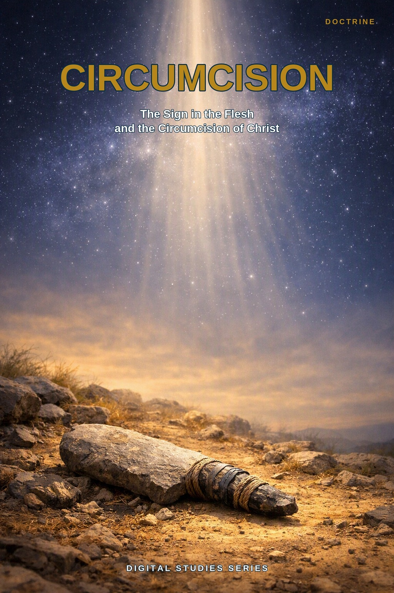
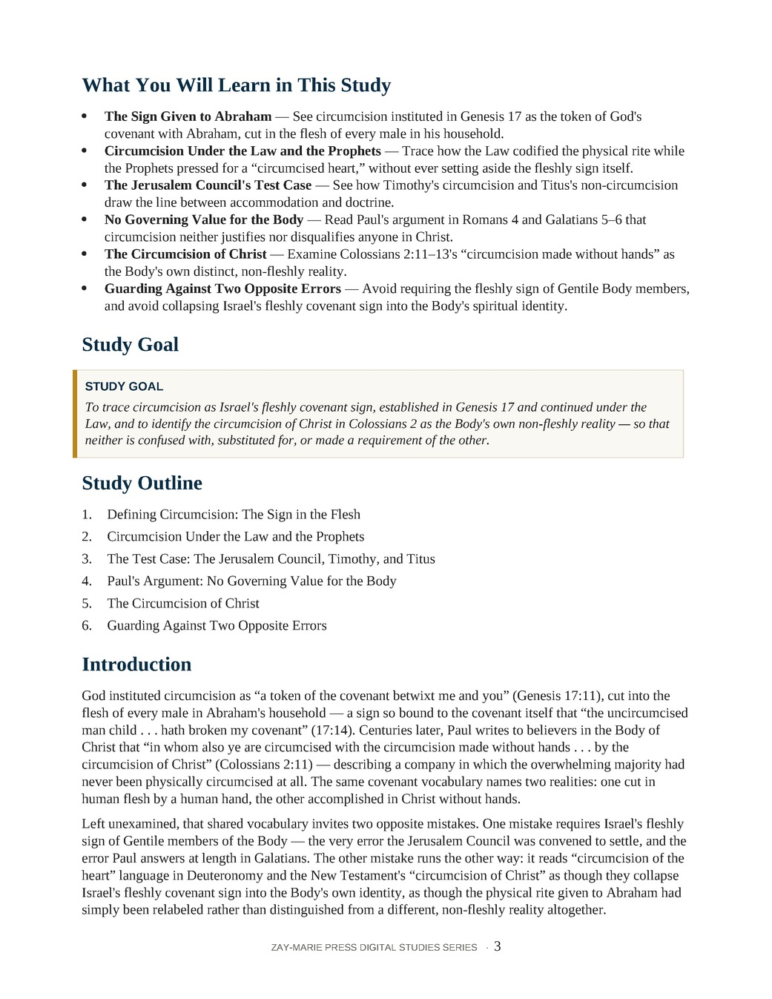
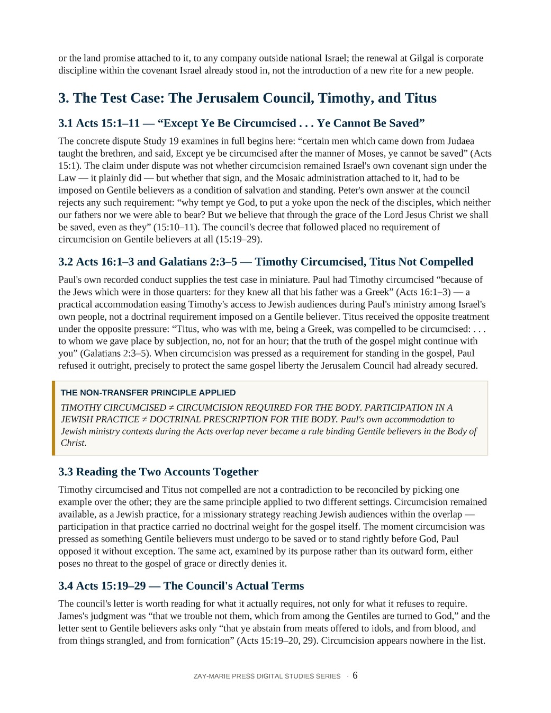

Circumcision
The Sign in the Flesh and the Circumcision of Christ
A Biblical Examination of Israel's Covenant Sign and the Body's Non-Fleshly Circumcision Under the Prophecy and Mystery Programs
God instituted circumcision as “a token of the covenant betwixt me and you” (Genesis 17:11), cut into the flesh of every male in Abraham's household. Centuries later, Paul tells believers in the Body of Christ that they are “circumcised with the circumcision made without hands . . . by the circumcision of Christ” (Colossians 2:11) — describing a company in which the overwhelming majority had never been physically circumcised at all. The same covenant vocabulary names two realities: one cut in human flesh by a human hand, the other accomplished in Christ without hands.
This study traces Israel's fleshly sign from Genesis 17 through the Law, the Prophets, and the Jerusalem Council's test case in Timothy and Titus, and the Body's circumcision of Christ from Colossians 2:11–13 through Philippians 3's “we are the circumcision.” It tests Paul's own conduct — circumcising Timothy while refusing to compel Titus — and names the two opposite errors a careful reader must avoid: requiring Israel's sign of the Body, and collapsing Israel's sign into the Body's own identity.
Two Circumcisions, Read on Their Own Terms
Scripture applies the word “circumcision” to a physical rite cut into Abraham’s household (Genesis 17:10–14), to an inward reality Israel is pressed toward without ever losing the rite (Deuteronomy 10:16; 30:6), and to a non-fleshly reality named for the Body of Christ (Colossians 2:11). The word itself only ever says that a cutting away has taken place — it does not say whether a physical rite or a spiritual reality is in view, which covenant and company the passage addresses, or whether circumcision is required, permitted, or set aside for the audience in view. Those questions must be answered from each passage’s own setting. Asked consistently, they keep Israel’s fleshly sign and the Body’s circumcision of Christ distinct without denying that both are named, in their own settings, by the same sovereign God.
This is not a full study of the Jerusalem Council itself, which Study 19 examines in full, nor of the Body’s one baptism, which Study 42 traces at length and which Colossians 2:11–13 pairs directly with the circumcision of Christ, nor of the Abrahamic covenant broadly, which Study 17 establishes in its own right. Its task is narrower: to trace circumcision specifically — as a sign, as history, and as a New Testament reality — and to test that reading against the passage most likely to blur the two together, Romans 2:28–29’s “circumcision . . . of the heart.”
How These Studies Relate
Study 51 traces the two circumcisions Scripture names — Israel’s fleshly covenant sign and the Body’s circumcision of Christ — and the discipline that keeps a shared word from becoming a shared doctrine.
Study 17 — The Abrahamic Covenant See the covenant that circumcision was given to seal in Genesis 17, and the broader promise this study’s narrower sign belongs to.
Study 19 — The Jerusalem Council Examine in full the council this study calls on as its test case for whether circumcision could be required of Gentile believers.
Study 42 — One Baptism Compare the Body’s other non-fleshly, in-Christ reality, read alongside Colossians 2:11–13’s own pairing of circumcision and baptism as the same union with Christ.
Trace the Sign, the Test Case, and the Body's Own Reality
One Word, Two Realities
See why “circumcision” alone never settles what is in view — the covenant, the company, and whether a physical rite or a spiritual reality is meant must come from each passage's own setting.
Israel's Covenant Sign
Trace circumcision from its institution in Genesis 17 through its codification under the Law in Leviticus 12, and its renewal at Gilgal in Joshua 5.
The Jerusalem Council's Test Case
See how Timothy's circumcision and Titus's refusal to be circumcised draw the line between missionary accommodation and doctrinal requirement.
No Governing Value for the Body
Read Paul's argument in Romans 4 and Galatians 5–6 that circumcision neither justifies nor disqualifies anyone in Christ.
The Circumcision of Christ
Examine Colossians 2:11–13's “circumcision made without hands” as the Body's own distinct, non-fleshly reality.
Guarding Against Two Opposite Errors
Avoid requiring the fleshly sign of Gentile Body members, and avoid collapsing Israel's fleshly covenant sign into the Body's spiritual identity.
Examine the Passages for Yourself
Genesis 17:9–14
The covenant sign cut in Abraham's flesh, and the stated penalty for refusing it.
Leviticus 12:3
The rite codified, timed, and enforced under the Law — not originated by it.
Deuteronomy 10:16; 30:6
“Circumcise therefore the foreskin of your heart” — the sign's inward meaning pressed, not revoked.
Acts 15:1, 10–11
“Except ye be circumcised . . . ye cannot be saved” — the claim the Jerusalem Council rejected.
Galatians 2:3–5
Titus not compelled to be circumcised — and what was at stake in Paul's refusal.
Romans 4:9–12
Abraham reckoned righteous by faith before he ever received the covenant sign.
Galatians 5:2–6
“Christ shall profit you nothing” — circumcision carries no governing value for the Body.
Colossians 2:11–13
The circumcision made without hands — the Body's own non-fleshly reality.
The Word Is Not the Test
“In whom also ye are circumcised with the circumcision made without hands, in putting off the body of the sins of the flesh by the circumcision of Christ” (Colossians 2:11).
Paul names the Body’s own reality in words deliberately borrowed from, and deliberately distinguished from, the sign given to Abraham’s household. No human hand performs this circumcision, and it is not a repetition of Genesis 17’s rite owed to Gentile believers as a requirement. The single word “circumcision” is not the test. Which covenant, which company, and whether a physical rite or a spiritual reality is in view — asked of each passage on its own terms — is.
Preview the Study Before You Purchase
Click any page to enlarge it for reading.
{kind=link}
{kind=link}

What You Will Learn
See the study's goal, outline, and the question it sets out to answer.
{kind=link}

The Jerusalem Council's Test Case
See how the study examines Timothy's circumcision and Titus's refusal as the concrete test of what circumcision does, and does not, require.
A Focused Study Built for
Understanding and Teaching
15-Page In-Depth Biblical Study
A careful study of Israel's fleshly covenant sign and the Body's circumcision of Christ, grounded in Genesis, Acts, Romans, Galatians, and Colossians.
6 Core Teaching Sections
Progress from Israel's covenant sign through the Jerusalem Council's test case to the Body's circumcision of Christ and the two opposite errors a careful reader must avoid.
Key Distinctions to Retain
Keep the covenant, company, and kind of reality (fleshly rite or spiritual reality) of each circumcision clear.
Review and Discussion Questions
Test the study's distinctions concerning covenant, audience, and governing value.
Teaching Outline
A structured framework for teaching both circumcisions with precision.
Guided Further Study
Return to Israel's sign, the Body's reality, and the discipline of covenant and audience, each traced further with directed questions.
Scripture-Tracing Exercise
Trace the study's key passages across the Law, the Prophets, Acts, and Paul's letters in their own context.
Final Synthesis Exercise
Bring the evidence together in one coherent, Scripture-based explanation.
Circumcision
15-page digital PDF · For personal use
Want More Than a Focused Study?
Digital Studies examine particular biblical subjects and difficult passages. The 40-lesson Biblical Hermeneutics course teaches a complete, repeatable method for establishing meaning in context, determining proper assignment, and making responsible application.